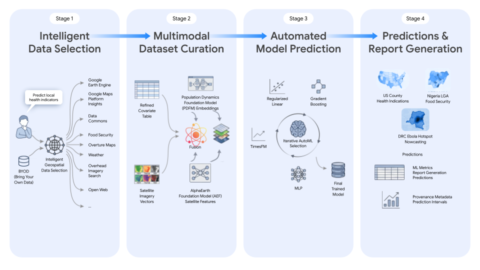
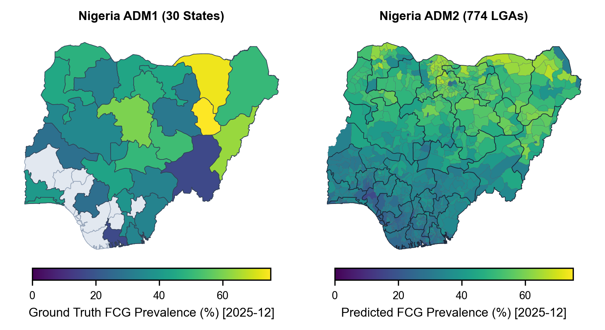

공간 예측 Agent에서 모델보다 먼저 설계해야 하는 것
“이 지역의 취약성을 예측해줘.”
이제는 자연어 요청 하나로 Agent가 데이터 후보를 찾고, 지도를 만들고, 여러 모델을 비교하는 장면을 상상하기 어렵지 않습니다. 하지만 공간 예측에서 먼저 물어야 할 질문은 모델 이름이 아닙니다. ‘이 지역’은 행정동인지 격자인지, 취약성은 무엇으로 정의하는지, 서로 다른 자료는 어떤 경계와 시점에서 결합하는지, 그리고 성능은 아직 보지 않은 다른 지역에서도 유지되는지를 정해야 합니다.
이 질문이 비어 있으면 지도는 그럴듯해도 무엇을 예측한 것인지와 어디까지 믿어도 되는지가 흐려집니다. 최근 Google Research가 소개하고 사전공개본으로 공개된 *Planetary Prediction Engine(PPE)*은 이 문제를 정면으로 다루려는 연구입니다. 이 글에서는 먼저 논문이 무엇을 만들고 어떻게 실험했는지 살핀 뒤, 그 구조를 공간 예측 Agent 운영에 어떻게 가져올 수 있을지 정리해보려 합니다.
PPE는 무엇을 만들려는 논문인가
PPE는 자연어 질의를 실행 가능한 지리공간 예측 과업으로 바꾸고, 이질적인 데이터 생태계에서 자료와 proxy를 찾아 데이터셋을 구성한 뒤 모델을 만들려는 agentic system입니다. 정리된 표 하나가 주어진 상황에서 최적 모델을 고르는 AutoML과는 출발점이 다릅니다. 공간 단위와 시간 범위가 맞는 공변량을 찾고, 위성·통계·공개 웹 자료를 결합하고, 예측이 가능한 형태로 바꾸는 과정 자체가 연구 대상입니다.
논문은 이 접근을 세 종류의 과업에서 평가합니다.
- 질병 nowcasting: 콩고민주공화국의 에볼라 확산 위험을 주 단위로 예측하는 과업
- 고해상도 downscaling: 나이지리아의 주(ADM1) 단위 식량안보 지표를 Local Government Area(ADM2/LGA) 수준으로 내려보는 과업
- 공간회귀: 미국의 사회취약성, CDC 건강 지표, FEMA 위험 관련 지표를 지역 단위로 예측하는 과업
이 과업들은 한 가지 지도를 더 정밀하게 그리는 문제로 묶이지 않습니다. 감염병, 식량안보, 보건·위험 지표는 label의 생산 방식, 공간 단위, 시간성이 모두 다릅니다. PPE가 흥미로운 이유는 그래서 ‘모든 지리 문제를 푸는 모델’을 내세우기보다, 서로 다른 공간 데이터 공급망을 하나의 workflow로 다루려 했다는 데 있습니다.
실제 시스템은 어떻게 구성됐나
논문 본문은 PPE의 핵심 구조를 Intelligent Data Selection, Multimodal Dataset Curation, Automated Model Building & Prediction의 세 단계로 설명합니다. Figure 1은 이 세 핵심 처리 단계 뒤에 예측과 report generation을 결과 영역으로 함께 보여줍니다.

Figure 1. PPE 논문의 workflow. 논문은 data selection, dataset curation, automated model building & prediction을 핵심 구조로 설명하고, 그림은 예측·보고서 생성을 결과 영역으로 함께 보여준다. 아래에서 제안하는 6단계 운영 프레임은 이 그림을 그대로 복제한 표준이 아니라, 공간 예측 Agent 운영을 위해 추가로 재구성한 해석이다.
출처: Ma et al., arXiv:2608.26088v1, Figure 1, CC BY 4.0. 변경: 블로그 레이아웃에 맞춰 크기만 조정함.
이 그림 읽는 법
이 그림은 네 칸으로 보이지만, 논문이 핵심 처리 단계로 부르는 것은 앞의 세 단계다. 첫 단계에서는 사용자가 가져온 데이터와 공개 지리공간 source를 함께 탐색해 과업에 맞는 자료와 proxy를 고른다. 둘째 단계에서는 정리된 공변량 표에 PDFM·AlphaEarth 같은 표현을 결합해 모델 입력을 만들고, 셋째 단계에서는 여러 model family를 반복 비교해 최종 모델을 선택한다. 오른쪽 네 번째 칸은 별도 모델링 단계라기보다, 그 결과를 예측·평가 지표·출처 metadata·prediction interval과 함께 내보내는 report surface로 읽는 편이 맞다.
첫 단계는 자연어 과업을 해석하고, 공간·시간적으로 맞는 데이터와 proxy를 찾는 일입니다. 다음 단계는 표형 공변량, 위성 기반 feature, foundation embedding 등을 맞춰 데이터셋으로 구성합니다. 마지막 단계에서는 정규화 선형 모델, gradient boosting, MLP 같은 후보를 비교하며 예측 모델을 고릅니다.
여기서 중요한 점은 LLM이 CSV나 GeoJSON 전체를 프롬프트 안에서 읽고 추론하는 분석기로 남지 않는다는 것입니다. 논문은 DataFrame, GeoJSON geometry, mobility matrix 같은 데이터 artifact를 opaque handle로 다음 단계에 전달하는 구조를 설명합니다. 각 단계는 필요한 도구와 작업만 맡고, 실제 데이터는 artifact로 관리합니다. 이 경계가 있어야 어떤 자료가 어디서 왔고 어떤 변환을 거쳤는지 나중에 확인할 수 있습니다.
대표 실험은 무엇을 보여주고, 무엇을 보장하지 않나
PPE의 나이지리아 사례는 공간 예측이 왜 매력적이면서도 조심스러운지 잘 보여줍니다. 논문은 30개 ADM1 주 단위의 식량소비군(FCG) 자료로 학습하고, 월별 581개 ADM2/LGA 수준에서 평가합니다. 넓은 행정구역의 관측을 더 작은 단위의 예측 지도로 바꾸는 downscaling 과업입니다.

Figure 3. Nigeria 식량안보의 ADM1→ADM2/LGA downscaling 사례. 세밀한 ADM2 지도는 직접 household 관측을 그대로 보여주는 지도가 아니라, coarse label·공변량·embedding으로 만든 예측 결과다. ADM2 평가는 blind MRP 추정치에 기반하므로 미시 단위의 직접 ground truth와 동일시하면 안 된다.
출처: Ma et al., arXiv:2608.26088v1, Figure 3, CC BY 4.0. 변경: 블로그 레이아웃에 맞춰 크기만 조정함.
논문은 이 과업에서 baseline 대비 성능 개선을 보고합니다. 다만 이 결과를 ‘LGA 수준의 실제 식량안보를 직접 관측했다’는 뜻으로 읽어서는 안 됩니다. ADM2 평가는 MRP 기반의 blind 추정치에 의존합니다. 독립적인 평가 신호이지만, household 단위의 직접 ground truth와는 다른 종류의 근거입니다. 지도 해상도가 촘촘해졌다는 사실도 곧바로 측정 정밀도가 높아졌다는 뜻은 아닙니다.
검증 분할도 과업마다 다릅니다. 나이지리아 사례는 주 단위 holdout을 사용했지만, 논문에 기술된 미국 CDC·FEMA 공간회귀 과업 일부는 80:20 random split을 사용합니다. 공간 데이터에서는 인접 지역이 비슷한 경향을 보이기 때문에, random split에서 train과 test에 가까운 지역이 함께 들어가면 점수가 높아질 수 있습니다. 따라서 이 성능을 아직 보지 않은 새 도시나 새 권역에 대한 일반화 성능으로 바꿔 말하면 안 됩니다.
PPE가 보여주는 것은 자연어에서 데이터 선택·정리·예측으로 이어지는 workflow가 여러 과업에서 작동할 수 있다는 가능성입니다. 반대로, 어떤 검증 설계에서도 같은 수준으로 작동한다는 보증은 아닙니다.
그래서 우리 Agent 설계로 무엇을 가져올 수 있나
논문의 공식 구조를 그대로 제품 표준으로 옮기기보다, 실제 운영에서 필요한 명세와 감사 통제점을 더해 풀어 쓸 수 있습니다.
Spatial Spec
→ Data / Proxy Evidence
→ Curation + Leakage Gate
→ Baseline Modeling
→ Spatial Evaluation
→ Audit Report중요: 아래 6단계는 PPE의 공식 단계명이 아니다. PPE의 공식 구조인 data selection → dataset curation → automated model building & prediction을, 실제 공간 예측 Agent 운영에서 필요한 명세·감사 통제점까지 풀어 쓴 이 글의 설계 해석이다.
1. 지도보다 먼저 분석 명세를 고정한다
자연어 요청을 바로 모델 호출로 넘기지 말고, target·공간 단위·geometry·join key·관측 시점·예측 시점·분할 규칙을 먼저 고정해야 합니다. 행정동 단위의 취약성과 100m 격자 단위의 취약성은 같은 과업이 아닙니다. 경계가 바뀌면 평균값과 주변 지역의 관계, 모델이 배우는 패턴도 달라집니다. 더 잘게 나눈 지도가 언제나 더 정확한 지도는 아닌 이유입니다.
2. 데이터와 proxy의 계보를 남긴다
후보 변수마다 원자료와 라이선스, 공간 단위와 결합 방식, 관측 시점, proxy 논리, 제외 사유를 기록해야 합니다. 예를 들어 어떤 지표가 특정 현상을 직접 측정한 값인지, 다른 개념을 대신 측정하는 proxy인지, target과 같은 조사나 추정모형에서 나온 값인지를 구분해야 합니다.
PPE의 Feature Gate는 target의 수학적 구성요소, 동일 조사·추정모형에서 나온 변수, target 이후의 downstream 변수, 미래 시점 정보를 걸러내려 합니다. 좋은 변수 후보를 많이 찾는 일과 예측에 써도 되는 변수를 판단하는 일은 다릅니다.
3. embedding은 답이 아니라 추가 feature다
PPE는 PDFM과 AlphaEarth 같은 장소 표현을 예측 과정에 결합합니다. 이런 embedding은 PDFM의 사회인구학적 잠재 상태와 AlphaEarth의 위성영상 기반 토지·환경 의미처럼, 명시적 변수만으로 포착하기 어려운 장소 맥락을 보완하는 feature로 이해하는 편이 안전합니다.
명시적 공변량
(인구·소득·POI·강수·NDVI·야간조도 등)
+ 장소 embedding
→ 최종 예측기명시적 변수는 과업에 직접 맞닿은 신호와 해석의 단서를 줍니다. embedding은 그 빈 곳을 보완할 수 있습니다. 내가 이 논문에서 가져가고 싶은 운영 원칙은, embedding을 기본 정답으로 두지 않고 명시적 변수만 쓴 기준선·ablation·spatial holdout을 통과했을 때만 추가 feature로 채택하는 방식이다. PPE 논문도 고해상도 위성 feature가 공간 스케일을 바꿨을 때 일반화를 떨어뜨릴 수 있는 사례를 보고합니다.
4. 누수 통제와 모델 선택은 검증 절차 안에 둔다
결측 처리도 같은 원칙을 따릅니다. PPE가 원문에서 직접 명시한 것은 결측 대체 통계를 train partition에서만 계산하는 Split-Isolated Imputation이다. 아래의 scaling·변수 선택·모델 선택은 그 원칙을 일반적인 검증 설계로 확장한 제안이다.
평균 대체·스케일링·지도학습형 변수 선택·하이퍼파라미터 선택은 held-out test 정보에 fit되지 않도록 각 학습/검증 절차 안에서 수행해야 한다. 전체 데이터를 먼저 보고 처리한 뒤 train/test로 나누면, 평가 데이터의 정보가 학습에 섞일 수 있습니다.
5. random split과 공간 일반화를 분리한다
random split은 같은 데이터 분포 안에서의 예측력을 보여줄 수 있습니다. 하지만 다른 도시·다른 권역으로 옮겨갈 때의 성능을 보려면 spatial block, 행정권역 holdout, 필요하다면 time holdout을 따로 둬야 합니다. 어떤 과업이 공간 보간인지, 미래 예측인지, 새 지역 전이인지에 따라 검증 설계도 달라져야 합니다.
앞서 도시 AI가 틀리는 이유: 그래프보다 중요한 것은 domain prior다에서 살핀 것은 모델 내부에 도시 이론과 검증 경계를 어떻게 넣을 것인가였습니다. 이번에는 범위를 모델 바깥으로 넓혀 봅니다. Agent가 데이터를 찾고 결합하고 평가하는 전체 과정에도 데이터 계보·누수 규칙·공간 holdout이라는 검증 경계가 있어야 합니다.
6. 예측지도와 evidence report를 함께 낸다
사용자가 받는 결과가 색칠된 지도 한 장뿐이면 검토가 어렵습니다. 어느 시점의 어떤 자료를 썼는지, 어떤 단위에서 계산됐는지, 관측 범위가 어디까지인지 알 수 없기 때문입니다. 좋은 공간 예측 Agent의 산출물은 지도와 함께 다음을 남겨야 합니다.
- target과 분석 단위, geometry, join key
- 데이터 출처·라이선스·관측 시점·변환 이력
- 채택·제외한 변수와 각각의 근거
- 결측 처리와 모델 선택이 이뤄진 학습 범위
- random / spatial / temporal 검증 설계와 결과
- 적용 범위, 불확실성, 알려진 한계PPE를 읽을 때 남겨야 할 경계
PPE는 2026년 8월 공개된 arXiv v1 preprint입니다. 이 글을 쓰는 시점에 peer review 여부는 확인하지 못했습니다. 실험은 과업별로 서로 다른 split을 사용하며, Nigeria downscaling의 ADM2 평가는 MRP 기반 추정치입니다. 전체 PPE 코드와 실행 재현 패키지의 명시적 공개 링크도 검토한 논문과 Google Research 소개 글에서는 확인하지 못했습니다.
그래서 이 논문에서 가져갈 것은 ‘공간 예측이 완전 자동화됐다’는 선언이나 특정 성능 숫자보다, 공간 데이터를 다루는 순서입니다. 좋은 Agent는 지도를 먼저 내놓는 Agent가 아니라, 그 지도가 어떤 자료·공간 단위·검증 범위·한계 위에 있는지 함께 보여주는 Agent여야 한다고 생각합니다.
Sources
- Google Research, “Planetary prediction engine: Automating global models via Earth AI” (2026-08-27). PPE의 공개 소개와 시스템 포지셔닝을 확인했습니다.
- Evelyn Ma et al., “Planetary Prediction Engine: Autonomous Geospatial Prediction via Intelligent Data Selection and Foundation Model Embeddings” (arXiv:2608.26088v1, 2026-08-26, CC BY 4.0). 파이프라인, 데이터·검증 설계, 실험 한계를 확인했습니다.
- 이 글의 6단계 운영 프레임은 위 자료를 바탕으로 재구성한 필자의 해석입니다.